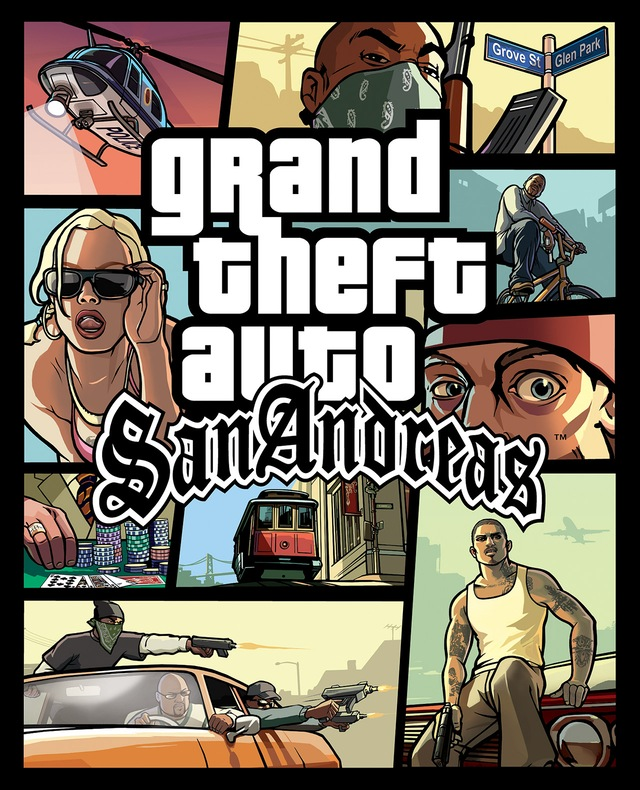

Grand Theft Auto San Andreas, faz parte da franquia Grand Theft Auto, sendo sucessor do Grand Theft Auto Vice City, lançou de início em 26 de outubro de 2004 para o PlayStation 2. Depois em Junho de 2005 para Xbox e Windows. Atualmente o jogo original foi lançado em PS4, Xbox One, PC, PS3, Xbox 360, Mac, iOS, PS2, Android, Xbox, Kindle, Windows Phone.
tornou-se o jogo mais vendido mais vendido de 2004, e o mais vendido do console Playstation 2, com os incríveis números de 27,5 milhões de cópias vendidas.
Recebendo bastante prêmios e indicações, um dos foi na Spike Video Game Awards 2004, o evento de premiação mais relevante na época, o jogo recebeu cinco indicações e ganhou quatro prêmios: "Jogo do Ano", "Melhor Jogo de Ação", "Melhor Trilha Sonora" e "Melhor Performance Masculina" para Samuel L. Jackson como Frank Tenpenny.
Não podemos falar de GTA sem falar da empresa Rockstar Games. Sendo uma subsidiária da empresa Take-Two, foi fundada em 1998 por meio do ativos da BMG Interactive adquiridos que a Take-Two.Rockstar Games tem vários estúdios, sendo eles Rockstar Austrália Sydney, Rockstar Dundee, Rockstar Índia, Rockstar LA Santa, Rockstar Leeds, Rockstar Lincoln, Rockstar Londres, Rockstar Nova Inglaterra, Rockstar Norte, Rockstar San Diego, Rockstar Toronto
Sendo a mente por trás do GTA temos Dan Houser, Sam Houser e Leslie Benzies. Sendo Dan que co-escreveu a história, e Sam e Leslie sendo produtores.
Grand Theft Auto San Andreas Remaster Definitive Edition. Sendo lançado em 11 de novembro de 2021 junto com as versão remaster de seus antecessores Grand Theft Auto Vice City Definitive Edition e Grand Theft Auto 3 Definitive Edition pela Desenvolvedores: Rockstar North, Grove Street Games. Para plataformas PlayStation 5, Nintendo Switch, PlayStation 4, Android, Xbox One, Windows e Ios.
Definitive Edition, é uma versão lançada perto do Aniversário de 20 anos do antecessor Grand Theft Auto 3, Prometia ser uma versão melhorada dessas franquias antigas por contar com novas tecnologias. Porém, não foi bem assim, jogo chegou com bastante falhas de desempenho rodando inferior a suas antigas versões e também preços muito altos para jogos que é só uma versão melhorada. Atualmente a Definitive Edition passa por melhorias de desempenho em versões de plataformas com porte maior.